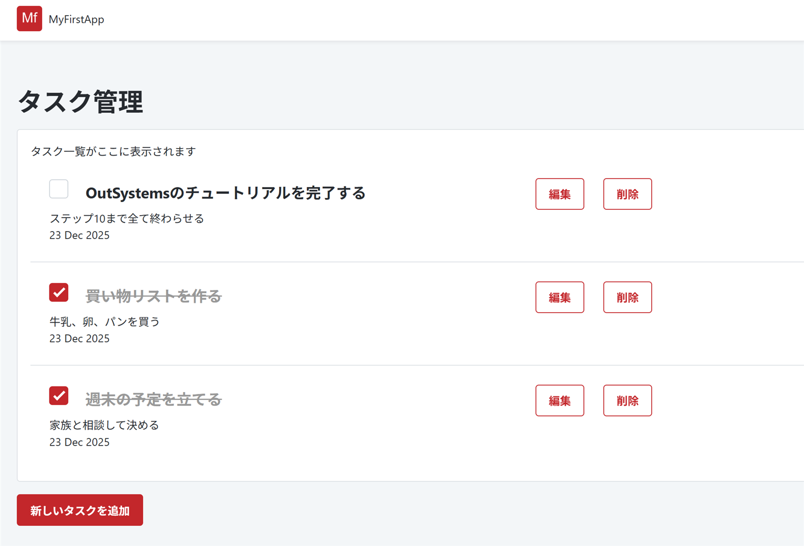

アプリを公開しよう - デプロイメント
作成したアプリを実際に使える状態で公開します。URLを共有して他の人にも使ってもらえるようにしましょう。
このステップで学ぶこと
- 1-Click Publishの詳細
- 公開前のチェック（エラーと警告の確認）
- 公開されたアプリへのアクセス方法
- URLの共有方法
- 動作テストの実施
- よくある問題と対処法
9.1 1-Click Publishとは？
OutSystemsの大きな特徴の一つが、1-Click Publish（ワンクリック公開）です。 通常のアプリケーション開発では、作成したアプリを実際に使える状態にするまでに複雑な手順が必要ですが、 OutSystemsではボタン一つで公開できます。
1-Click Publishの仕組み
Service Studioで「Publish」ボタンをクリックすると、OutSystemsが自動的に以下の処理を実行します：
- エラーチェック: アプリに問題がないか自動検証
- ビルド: アプリを実行可能な形式に変換
- デプロイ: クラウド環境に配置
- 公開: URLでアクセス可能な状態にする
開発環境"] --> B{"1-Click
Publish"} B --> C["エラーチェック
実行"] C --> D{"エラー
あり?"} D -->|はい| E["エラーメッセージ
表示"] D -->|いいえ| F["ビルド
実行"] F --> G["クラウドに
デプロイ"] G --> H["アプリ公開
完了"] H --> I["URLで
アクセス可能"] style B fill:#d1fae5,stroke:#10b981,stroke-width:2px style H fill:#d1fae5,stroke:#10b981,stroke-width:2px style I fill:#d1fae5,stroke:#10b981,stroke-width:2px
9.2 公開前のチェック
実装 9-1: エラーと警告の確認
アプリを公開する前に、エラーや警告がないか確認しましょう。 Service Studioは問題を自動的に検出して教えてくれます。
TrueChangeパネルを確認
Service Studioの下部にある「TrueChange」パネルを開きます。 ここには、エラー（赤いアイコン）や警告（黄色いアイコン）が表示されます。
エラーの種類を理解する
OutSystemsのエラーには2種類あります：
-
エラー（Error）: 必ず修正が必要。エラーがあると公開できません。
例: 必須項目が未設定、データ型の不一致など -
警告（Warning）: 推奨される改善点。警告があっても公開は可能です。
例: 使用されていない変数、最適化の提案など
エラーを修正する
エラーメッセージをダブルクリックすると、問題のある箇所に自動的にジャンプします。 メッセージの内容を読んで、指示に従って修正しましょう。
重要ポイント
エラーが0件になるまで修正を続けてください。警告は可能であれば修正することをおすすめしますが、 必須ではありません。初心者のうちは、エラーがなければ公開して大丈夫です。
9.3 アプリの公開
実装 9-2: 1-Click Publishの実行
いよいよアプリを公開します。エラーが0件になったことを確認したら、Publishボタンをクリックしましょう。
Publishボタンをクリック
Service Studioのツールバーにある緑色の「1-Click Publish」ボタン、 またはキーボードショートカットF5を押します。
公開プロセスを待つ
画面下部に公開の進行状況が表示されます。通常、数十秒から数分で完了します。
- 「Validating」- 検証中
- 「Generating」- ビルド中
- 「Deploying」- デプロイ中
- 「Done」- 完了
公開完了のメッセージを確認
公開が成功すると、「Module published successfully」というメッセージが表示されます。 同時に、アプリのURLも表示されます。
公開されたアプリへのアクセス
公開が完了したら、すぐにアプリにアクセスできます：
- 1 公開完了メッセージ内の「Open in Browser」ボタンをクリック
- 2 自動的にブラウザが開き、アプリが表示されます
- 3 URLをコピーして、ブックマークに保存しておきましょう
URLの形式
https://[あなたの環境名].outsystemscloud.com/MyTaskManager/
9.4 動作テストの実施
テストチェックリスト
公開したアプリが正しく動作するか、以下の項目を確認しましょう：
公開されたアプリの動作確認
以下は、公開されたタスク管理アプリの実際の画面例です。 あなたのアプリもこのように表示されているか確認してみましょう。
タスクの登録、編集、削除、完了チェックなど、すべての機能が正しく動作することを確認してください
9.5 URLの共有方法
公開したアプリは、URLを共有するだけで他の人も使えるようになります。 ただし、Personal Environmentには利用制限があることに注意してください。
URLをコピーする
ブラウザのアドレスバーからURLをコピーして、メールやチャットで共有できます。
QRコードを作成
スマートフォンで簡単にアクセスできるよう、QRコード生成サービスを使うのもおすすめです。
Personal Environmentの制限
無料のPersonal Environmentには、以下の制限があります：
- 同時接続ユーザー数に制限があります
- データ量に上限があります
- 長期間アクセスがないと休止状態になることがあります
- 本格的なビジネス利用には有料版が推奨されます
トラブルシューティング
公開ボタンを押してもエラーが表示される
原因: アプリにエラーが残っている
解決方法:
- TrueChangeパネルを開いて、赤いエラーアイコンがないか確認
- エラーメッセージをダブルクリックして、問題箇所に移動
- エラーメッセージの内容に従って修正
- すべてのエラーを修正したら、再度Publishを実行
公開は成功したがアプリが表示されない
原因: URLが間違っている、またはブラウザのキャッシュの問題
解決方法:
- URLが正しいか再確認（Service Studioの公開完了メッセージからコピー）
- ブラウザのキャッシュをクリア（Ctrl+Shift+DeleteまたはCmd+Shift+Delete）
- ブラウザを再起動してから再度アクセス
- 別のブラウザで試してみる
データが表示されない・消えている
原因: テストデータが公開環境に含まれていない、またはデータベースがリセットされた
解決方法:
- Service Studioでのテストデータは公開環境には反映されません
- 公開したアプリから新しくデータを登録してください
- 開発環境と本番環境は別々のデータベースを使用しています
- 必要に応じて、初期データを登録するスクリプトを作成することもできます
スマートフォンで表示が崩れる
原因: レスポンシブデザインの設定が不十分
解決方法:
- Service Studioのプレビュー機能で、モバイル表示を確認
- コンテナやテーブルの幅設定を確認（固定幅を避ける）
- OutSystemsのレスポンシブグリッドシステムを活用
- 必要に応じて、モバイル専用のスクリーンを作成
9.6 アプリの更新と再公開
アプリを公開した後も、いつでも修正や機能追加ができます。 変更を加えたら、再度Publishボタンを押すだけで、最新版が公開されます。
修正・機能追加"] --> B["1-Click
Publish"] B --> C["自動的に
更新"] C --> D["公開済みアプリに
即座に反映"] style A fill:#dbeafe,stroke:#3b82f6,stroke-width:2px style B fill:#d1fae5,stroke:#10b981,stroke-width:2px style D fill:#d1fae5,stroke:#10b981,stroke-width:2px
ヒント
大きな変更を加える前に、現在のバージョンをバックアップしておくことをおすすめします。 Service Studioの「File」→「Save As」で別名保存できます。
ステップ完了チェック
以下の項目が完了していることを確認してください：
おめでとうございます！
アプリを無事に公開できました！ あなたの作ったアプリが、インターネット上で誰でもアクセスできる状態になりました。 次のステップでは、このチュートリアルの総まとめと、さらに学習を進めるための情報をお伝えします。
次のステップ: 次のステップへ - さらに学ぶために